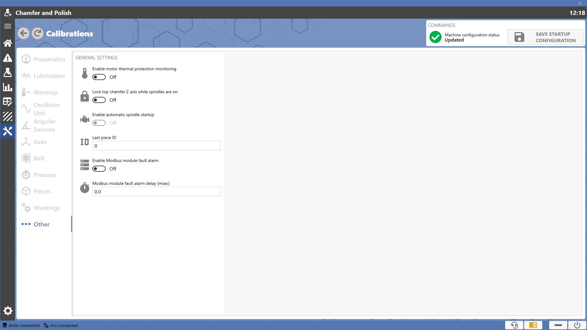
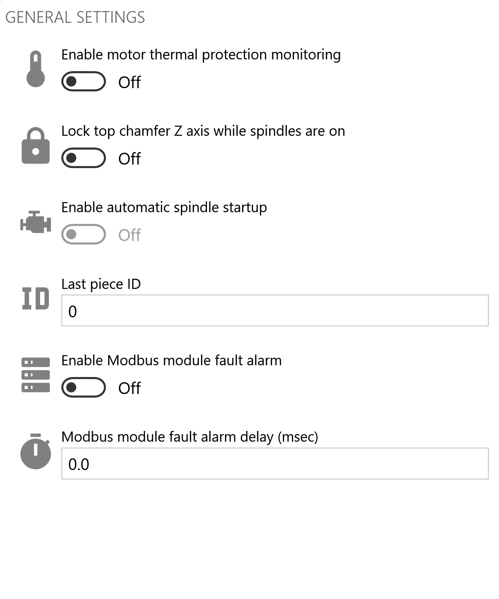
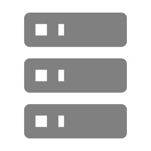

Machine technical documentation Operational document
Set general machine calibration parameters.

General settings
These parameters configure the motor monitoring, top chamfer Z-axis lock, piece identifier and Modbus fault alarm.

Enable motor thermal protection monitoring | |
Lock top chamfer Z axis while spindles are on | |
Enable automatic spindle startup | |
 | Last piece ID |
 | Enable Modbus module fault alarm |
 | Modbus module fault alarm delay |